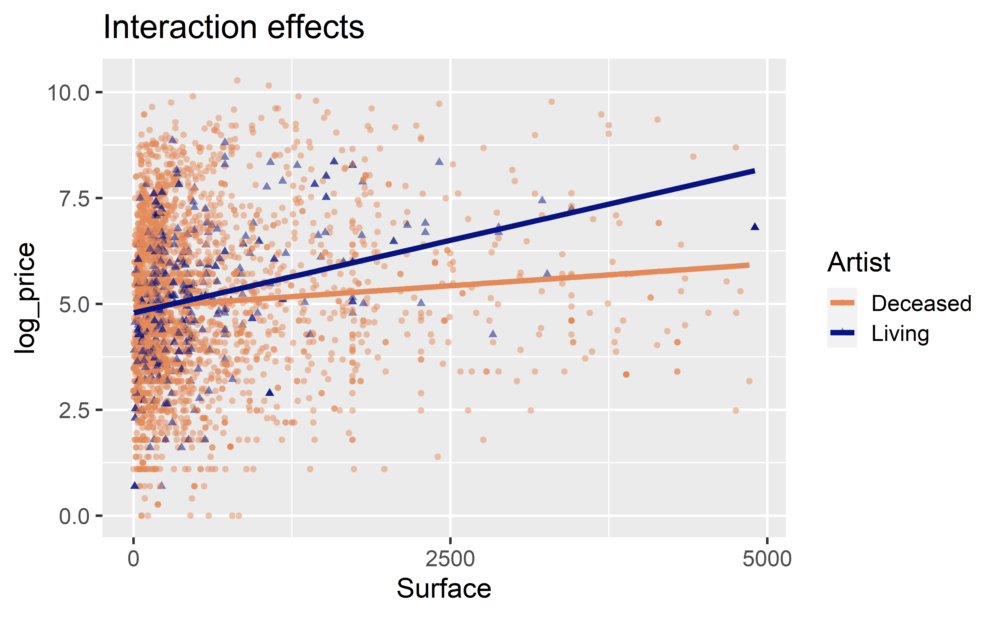

More models with multiple predictors
Data Science in a Box
layout: true
class: middle
Two numerical predictors
The data
pp <- read_csv(
"data/paris-paintings.csv",
na = c("n/a", "", "NA")
) %>%
mutate(log_price = log(price))Multiple predictors
- Response variable:
log_price - Explanatory variables: Width and height
pp_fit <- linear_reg() %>%
set_engine("lm") %>%
fit(log_price ~ Width_in + Height_in, data = pp)
tidy(pp_fit)# A tibble: 3 x 5
term estimate std.error statistic p.value
<chr> <dbl> <dbl> <dbl> <dbl>
1 (Intercept) 4.77 0.0579 82.4 0
2 Width_in 0.0269 0.00373 7.22 6.58e-13
3 Height_in -0.0133 0.00395 -3.36 7.93e- 4Linear model with multiple predictors
# A tibble: 3 x 5
term estimate std.error statistic p.value
<chr> <dbl> <dbl> <dbl> <dbl>
1 (Intercept) 4.77 0.0579 82.4 0
2 Width_in 0.0269 0.00373 7.22 6.58e-13
3 Height_in -0.0133 0.00395 -3.36 7.93e- 4\[\widehat{log\_price} = 4.77 + 0.0269 \times width - 0.0133 \times height\]
Visualizing models with multiple predictors
.panelset[ .panel[.panel-name[Plot] .pull-left-wide[]] .panel[.panel-name[Code]]]
class: middle
Numerical and categorical predictors
Price, surface area, and living artist
- Explore the relationship between price of paintings and surface area, conditioned on whether or not the artist is still living
- First visualize and explore, then model
- But first, prep the data
.midi[]
Typical surface area
.panelset[ .panel[.panel-name[Plot] .pull-left-narrow[ Typical surface area appears to be less than 1000 square inches (~ 80cm x 80cm). There are very few paintings that have surface area above 5000 square inches.] .pull-right-wide[]] .panel[.panel-name[Code]]]
Narrowing the scope
.panelset[ .panel[.panel-name[Plot] For simplicity let’s focus on the paintings with Surface < 5000:] .panel[.panel-name[Code]]]
Facet to get a better look
.panelset[ .panel[.panel-name[Plot]] .panel[.panel-name[Code]]]
Two ways to model
- Main effects: Assuming relationship between surface and logged price does not vary by whether or not the artist is living.
- Interaction effects: Assuming relationship between surface and logged price varies by whether or not the artist is living.
Interacting explanatory variables
- Including an interaction effect in the model allows for different slopes, i.e. nonparallel lines.
- This implies that the regression coefficient for an explanatory variable would change as another explanatory variable changes.
- This can be accomplished by adding an interaction variable: the product of two explanatory variables.
Two ways to model
.pull-left-narrow[ - Main effects: Assuming relationship between surface and logged price does not vary by whether or not the artist is living - Interaction effects: Assuming relationship between surface and logged price varies by whether or not the artist is living] .pull-right-wide[]
Fit model with main effects
- Response variable:
log_price - Explanatory variables:
Surfacearea andartistliving
.midi[]
–
\[\widehat{log\_price} = 4.88 + 0.000265 \times surface + 0.137 \times artistliving\]
Solving the model
- Non-living artist: Plug in 0 for
artistliving
\(\widehat{log\_price} = 4.88 + 0.000265 \times surface + 0.137 \times 0\)
\(= 4.88 + 0.000265 \times surface\)
- Living artist: Plug in 1 for artistliving |
| \(\widehat{log\_price} = 4.88 + 0.000265 \times surface + 0.137 \times 1\) \(= 5.017 + 0.000265 \times surface\) |
Visualizing main effects
.pull-left-narrow[ - Same slope: Rate of change in price as the surface area increases does not vary between paintings by living and non-living artists. - Different intercept: Paintings by living artists are consistently more expensive than paintings by non-living artists.] .pull-right-wide[]
Interpreting main effects
.midi[]
- All else held constant, for each additional square inch in painting’s surface area, the price of the painting is predicted, on average, to be higher by a factor of 1.
- All else held constant, paintings by a living artist are predicted, on average, to be higher by a factor of 1.15 compared to paintings by an artist who is no longer alive.
- Paintings that are by an artist who is not alive and that have a surface area of 0 square inches are predicted, on average, to be 132 livres.
Main vs. interaction effects
- The way we specified our main effects model only lets
artistlivingaffect the intercept. - Model implicitly assumes that paintings with living and deceased artists have the same slope and only allows for different intercepts.
.question[ What seems more appropriate in this case? + Same slope and same intercept for both colours + Same slope and different intercept for both colours + Different slope and different intercept for both colours]
Interaction: Surface * artistliving

Fit model with interaction effects
- Response variable: log_price
- Explanatory variables:
Surfacearea,artistliving, and their interaction
.midi[]
Linear model with interaction effects
.midi[]
\[\widehat{log\_price} = 4.91 + 0.00021 \times surface - 0.126 \times artistliving\]
\[+ ~ 0.00048 \times surface * artistliving\]
Interpretation of interaction effects
- Rate of change in price as the surface area of the painting increases does vary between paintings by living and non-living artists (different slopes),
- Some paintings by living artists are more expensive than paintings by non-living artists, and some are not (different intercept).
.small[ .pull-left[ - Non-living artist: \(\widehat{log\_price} = 4.91 + 0.00021 \times surface\) \(- 0.126 \times 0 + 0.00048 \times surface \times 0\) \(= 4.91 + 0.00021 \times surface\) - Living artist: \(\widehat{log\_price} = 4.91 + 0.00021 \times surface\) \(- 0.126 \times 1 + 0.00048 \times surface \times 1\) \(= 4.91 + 0.00021 \times surface\) \(- 0.126 + 0.00048 \times surface\) \(= 4.784 + 0.00069 \times surface\)] .pull-right[]]
Comparing models
It appears that adding the interaction actually increased adjusted \(R^2\), so we should indeed use the model with the interactions.
glance(pp_main_fit)$adj.r.squared[1] 0.01258977glance(pp_int_fit)$adj.r.squared[1] 0.01676753Third order interactions
- Can you? Yes
- Should you? Probably not if you want to interpret these interactions in context of the data.